Agency
Open the agency route for team, culture, values so marketing, advertising & communications visitors can compare context, proof, and next steps.
Open AgencyHome / 01
Home opens as a clear marketing decision hub: what Spark offers, who it helps, why it matters, and which route to take first.
The first screen combines positioning, proof, primary action, and fast internal navigation, so people can act immediately or compare the rest of the home route with context.
Immersive case-study hero
Select the closest route and Spark keeps the next step, proof, and follow-up expectation aligned with results and creative confidence.
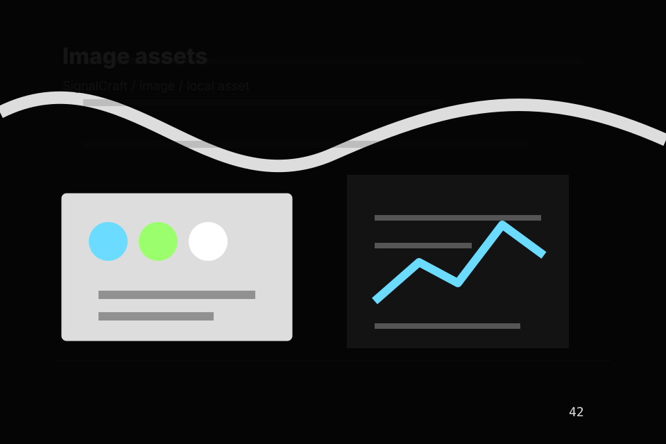
Site atlas
This homepage is the working index for marketing, advertising & communications: it explains the offer, points to every deeper page, and keeps the final action visible without making the visitor hunt.
A marketing agency site with immersive black work panels, sharp case filters, results proof, and brief routes. The page links problem, promise, services, process, proof, questions, support, legal routes, and conversion paths into one clear decision map.
Open the agency route for team, culture, values so marketing, advertising & communications visitors can compare context, proof, and next steps.
Open AgencyOpen the services route for branding, campaigns, content so marketing, advertising & communications visitors can compare context, proof, and next steps.
Open ServicesOpen the work route for portfolio, campaigns, brands so marketing, advertising & communications visitors can compare context, proof, and next steps.
Open WorkOpen the strategy route for audience, message, channels so marketing, advertising & communications visitors can compare context, proof, and next steps.
Open StrategyOpen the process route for discover, plan, create so marketing, advertising & communications visitors can compare context, proof, and next steps.
Open ProcessOpen the results route for leads, sales, reach so marketing, advertising & communications visitors can compare context, proof, and next steps.
Open ResultsOpen the pricing route for projects, retainers, campaigns so marketing, advertising & communications visitors can compare context, proof, and next steps.
Open PricingOpen the insights route for trends, guides, frameworks so marketing, advertising & communications visitors can compare context, proof, and next steps.
Open InsightsOpen the contact route for brief, budget, timeline so marketing, advertising & communications visitors can compare context, proof, and next steps.
Open ContactReview the local assets, icons, OG images, and static handoff materials used by Spark.
Open Asset SystemUse the full sitemap to recover any route and verify the whole Spark structure.
Open SitemapRead the privacy route before sending personal details through the static form.
Open PrivacyManage consent and understand the privacy-safe analytics approach.
Open CookiesHome / 02
Problem frames the pressure behind the visit, then connects it to a practical path visitors can recognise and act on.
The copy avoids blame and panic. It shows the common friction, the practical consequence, and the calmer route Spark uses to move people forward.
Open Agency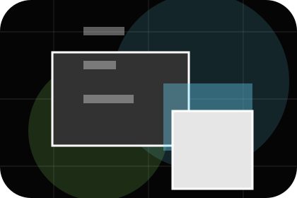
Problem names the real friction visitors bring to the home route, so the page feels relevant before any claim is made.
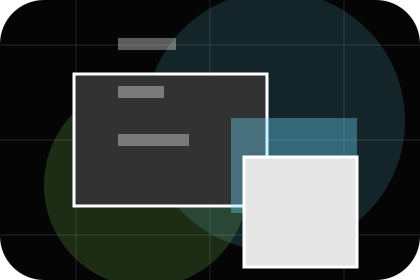
The copy connects that friction to practical risk, delay, confusion, or missed opportunity without exaggerating it.
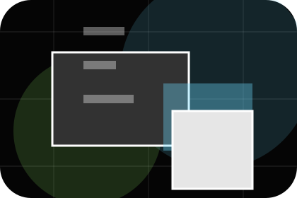
The final cue moves visitors toward a clearer route instead of leaving them with the problem alone.
Home / 03
Positioning adds professional context to the home route, using the dark agency case system structure to support results and creative confidence before visitors choose a next step.
Spark uses dark campaign cards and focused copy to make the decision easier to scan, aligning the section with results and creative confidence rather than filling space.
Open ServicesSpark structures positioning around context, judgment, and a clear next route so visitors can compare the block quickly before they send a campaign brief.
Send Campaign BriefHome / 04
Promise defines the better state Spark is built to create, with enough detail to make the promise believable.
A marketing agency site with immersive black work panels, sharp case filters, results proof, and brief routes. The section grounds that direction in concrete benefits, visible tradeoffs, and a next route visitors can use when the promise feels relevant.
Open WorkPromise defines what becomes clearer, easier, or safer when Spark is the chosen route.
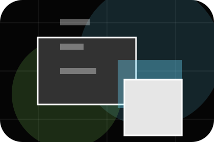
The benefit is tied to results and creative confidence, not a vague quality claim.
Visitors get a linked path to compare the promise against services, standards, or examples.
Home / 05
Services explains the practical scope, best-fit situations, and expected outcome so marketing visitors can compare options without decoding jargon.
The section keeps the offer concrete: what is included, who it is best for, what decision it supports, and which linked route gives the deeper detail.
Open ServicesWho should use services and when it belongs in the home journey.
The practical benefit visitors should expect after choosing this route.
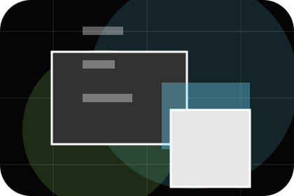
Where to compare details, pricing, support, or contact options before committing.
Immersive case-study hero
Select the closest route and Spark keeps the next step, proof, and follow-up expectation aligned with results and creative confidence.
Home / 06
Work adds professional context to the home route, using the dark agency case system structure to support results and creative confidence before visitors choose a next step.
Spark uses dark campaign cards and focused copy to make the decision easier to scan, aligning the section with results and creative confidence rather than filling space.
Open ProcessWork gives the page a specific angle instead of repeating the navigation label.
The dark campaign cards show what to compare, what to avoid, and what matters most for marketing, advertising & communications visitors.
The final cue points to a useful internal route so the section keeps the journey moving.
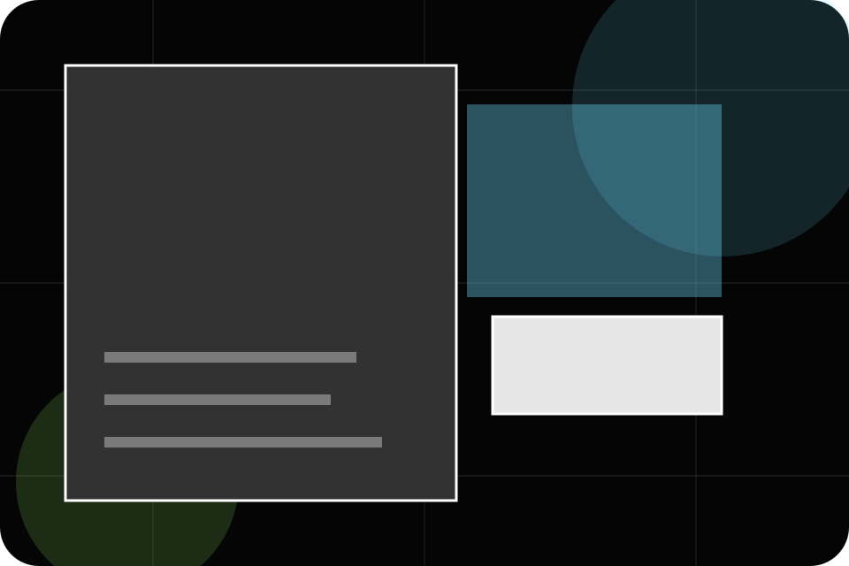
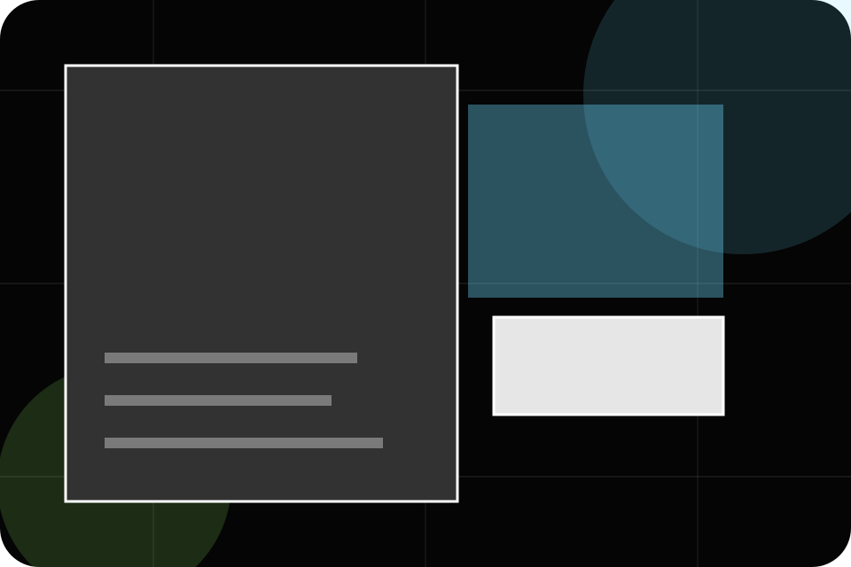
Home / 07
Results shows what changes after the work: clearer decisions, visible progress, and proof points that connect the offer to real outcomes.
The layout connects before-and-after thinking with measured outcomes, making the result easy to scan without promising what the business cannot guarantee.
Open ResultsThe uncertainty, delay, or missed opportunity visitors bring into results.
The clearer, safer, or more valuable state Spark is designed to support.
The visible cue that connects results to a believable decision, not a loose claim.
Home / 08
Trust gives the proof layer for home: standards, evidence, and reassurance that make the next decision feel grounded.
Instead of relying on vague claims, Spark presents visible standards, process cues, and proof artifacts that help marketing visitors judge fit.
Open PricingVisible proof that helps visitors believe the claims behind trust.
The quality, safety, or operating expectation this section makes explicit.
What becomes clearer before someone decides whether to send a campaign brief.
Home / 09
Questions handles buying doubts directly so visitors can understand timing, fit, limits, and the safest next step.
Answers are short by design: enough to remove hesitation, not so much that the page turns into documentation before the visitor can act.
Open Contact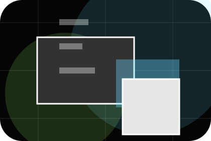
Questions gives the page a specific angle instead of repeating the navigation label.
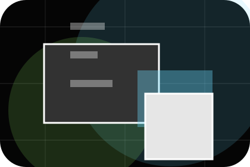
The dark campaign cards show what to compare, what to avoid, and what matters most for marketing, advertising & communications visitors.
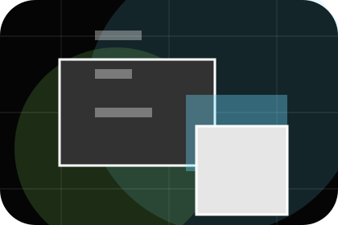
The final cue points to a useful internal route so the section keeps the journey moving.
Spark starts with a focused intake so the recommendation matches the visitor's context, risk, timing, and readiness.
Each route explains inclusions, exclusions, documents, timing, and the decision points that affect final delivery.
The theme uses dark agency case system, dark campaign cards, and case study filter, campaign result tabs, brief form rather than a shared template rhythm.
Immersive case-study hero
Select the closest route and Spark keeps the next step, proof, and follow-up expectation aligned with results and creative confidence.
Information is provided for planning and should be reviewed for the final client, location, and operating rules.
Home / 10
Spark closes the home route with a clear action, a quick reminder of the value, and a low-friction way to send a campaign brief.
Visitors who are ready can use the primary action. Visitors who are still comparing can scan the section links, proof, and support routes before they send a campaign brief.
Send Campaign BriefThe final block keeps the choice simple: act now, compare one more proof route, or send enough detail for a focused response.
Send Campaign Briefresults and creative confidence
A marketing agency site with immersive black work panels, sharp case filters, results proof, and brief routes. Home ends with a direct path to send a campaign brief, plus enough context for visitors who still need to compare.
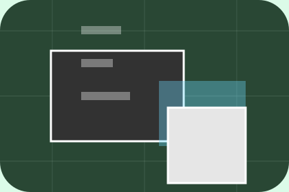
Send Campaign Brief